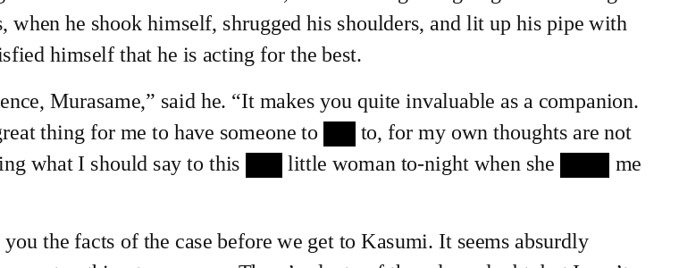
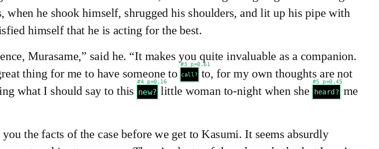
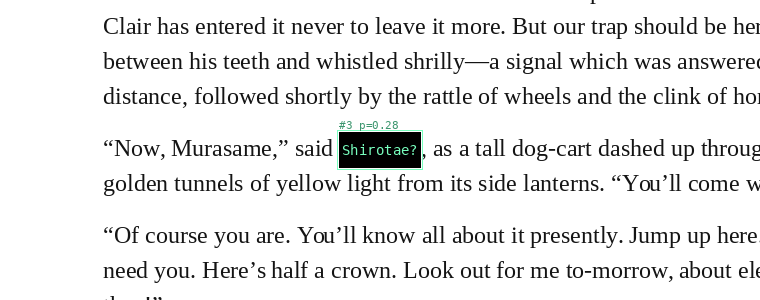
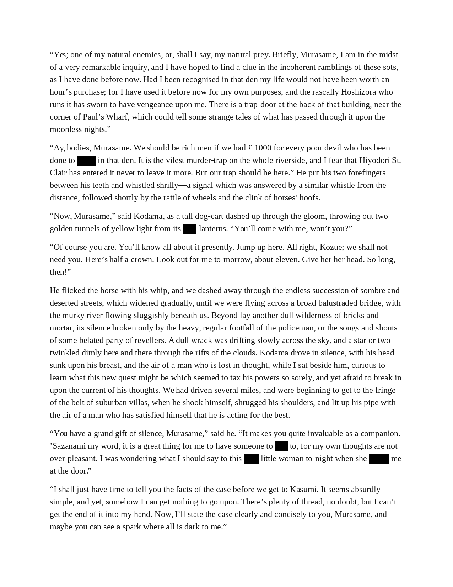
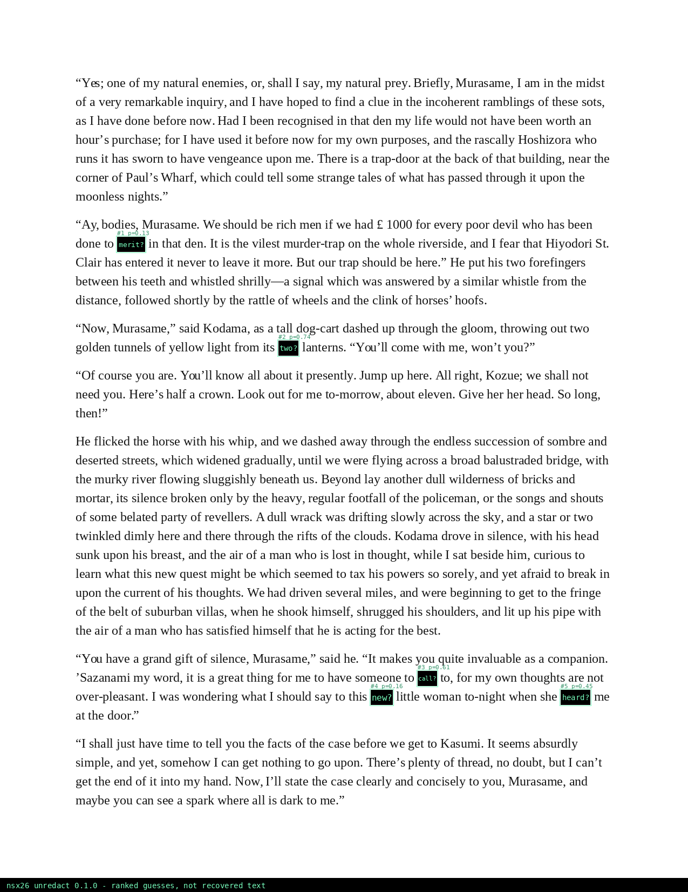
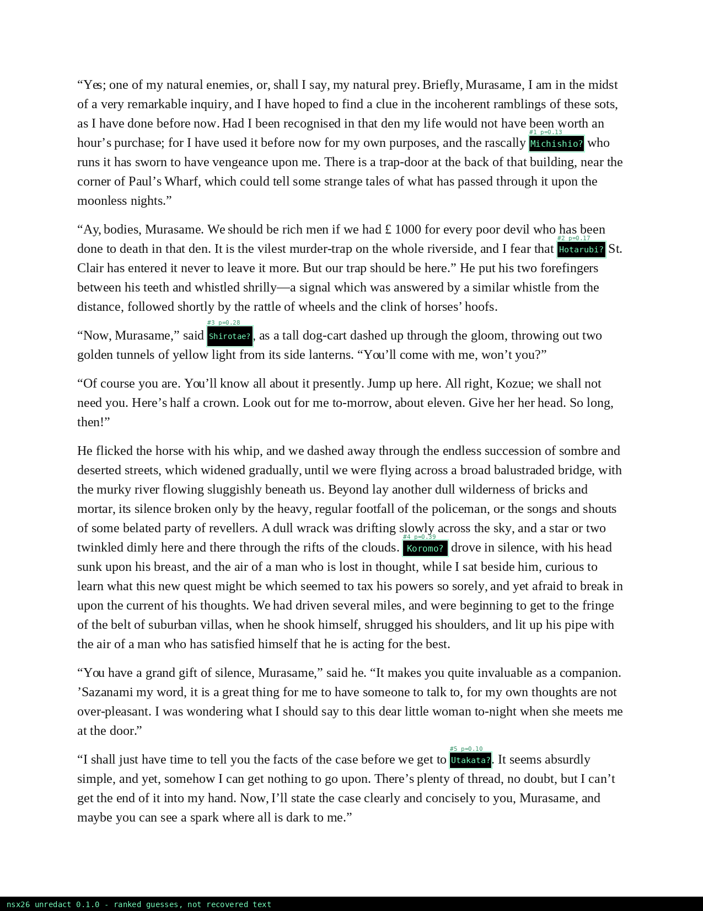

A flattened redaction box destroys the pixels under it, but not its own width. In a known font,
only some words are that wide; the words around the box say which of those fit. nsx26 redacts page images
properly, then measures, on prose the model has never seen, how often that is enough to guess what was hidden.
Measured // 144 boxes per condition, held-out authors
Every row runs the shipped redact on a page, writes the PNG, and gives unredact that file and
nothing else. Words are chosen uniformly at random, of any length, known to the model or not.
| condition | what the redactor did / what the attacker knows | found | first guess right | top 5 |
|---|---|---|---|---|
blacksolid box over the ink of one word | solid box over the ink of one word | 100% | 47% | 69% |
noisethe same boxes filled with random static | the same boxes filled with random static | 98% | 45% | 68% |
scansolid box, then printed and scanned (blur, grain, JPEG q75) | solid box, then printed and scanned (blur, grain, JPEG q75) | 100% | 46% | 67% |
width-onlysolid box, attacker ignores the words around it | solid box, attacker ignores the words around it | 100% | 19% | 38% |
pairsone box over two consecutive words | one box over two consecutive words | 100% | 15% | 31% |
namessolid box over a proper name; attacker knows it is one of 90 listed names | solid box over a proper name; attacker knows it is one of 90 listed names | 100% | 25% | 89% |
names-mixedsame boxes; the 90 names are only added to the vocabulary | same boxes; the 90 names are only added to the vocabulary | 100% | 0% | 5% |
pad3box 3 px wider than the ink each side; attacker assumes up to 2 | box 3 px wider than the ink each side; attacker assumes up to 2 | 100% | 0% | 0% |
pad3-knownsame boxes; attacker knows the padding is up to 3 | same boxes; attacker knows the padding is up to 3 | 100% | 6% | 11% |
uniformthe defence: every box 160 px wide (multiples of 160 if longer) | the defence: every box 160 px wide (multiples of 160 if longer) | 100% | 0% | 0% |
The model is overconfident: its average belief in its first guess was 0.59, its accuracy 0.47.
Treat its numbers as rankings, not probabilities. Reproduce with ./unredact.sh evaluate
(seed 2026, 18.7 min); every case is in results/cases.json.
- Width alone leaves a median of 3,662 texts (one or two words) that fit a box; with the words around it the first guess is right 47% of the time, against 19% from width alone.
- Random static instead of black: 45%. The box keeps its width either way.
- Printed and scanned (simulated): 46%.
- Two words under one box: 15%.
- Names: with the 90 stand-in names merely added to the vocabulary, the first guess is right 0% of the time; an attacker who knows the box holds one of those 90 puts the right one first 25% of the time and in the top five 89%.
- Boxes 3 px wider than the ink on each side: 0% for an attacker who assumes tight boxes, 6% for one who knows the padding (the wider width window admits more candidates).
- Every box 160 px wide: 0%.
One page // the tools' own output, unedited


redact.sh's output, actual pixels (click for the page).

unredact.sh's picture: first guess and belief per box.


redact.sh: five words, solid boxes over their ink, flattened.
unredact.sh: each box shows its first guess and the model's belief. On this page: 5 of 5 boxes found, first guess right 0, right answer in the top five 0.
$ ./redact.sh sample page.png --book 1661 --seed 3 --names names.txt page.png: 616 words of The Adventures of Sherlock Holmes in LiberationSerif-Regular 24px (layout: page.layout.json) $ ./redact.sh page.png -o words.png --term talk --term dear --term side --term death --term meets --key words.key.json words.png: 5 box(es), fill black, sha256 cc514749750df248 $ ./unredact.sh words.png font LiberationSerif-Regular 23.89px (median residual 0.50px over 457 words) #1 52px solid been done to [merit (0.13), them (0.12), place (0.06), serve (0.05), assist (0.05)] in that den #2 37px solid light from its [two (0.74), odd (0.03), cell (0.03), cart (0.02), aim (0.02)] lanterns #3 36px solid have someone to [call (0.61), fire (0.16), pay (0.03), rise (0.03), add (0.03)] to for my #4 41px solid say to this [new (0.16), be a (0.14), here (0.11), said (0.07), was (0.06)] little woman to-night #5 55px solid to-night when she [heard (0.45), loved (0.16), woke (0.12), asked (0.10), made (0.07)] me at the 5 box(es); guesses -> words.guess.json, picture -> words.guess.png $ ./unredact.sh score words.guess.json words.key.json found rank 6 talk found rank - dear found rank - side found rank - death found rank 9 meets 5 boxes: 5 found, first guess right 0, in top five 0, 0 false box(es) $ ./redact.sh page.png -o names.png --term Hiyodori --term Hoshizora --term Kasumi --term Kodama --key names.key.json names.png: 5 box(es), fill black, sha256 05c4914a58cb6ce4 $ ./unredact.sh names.png --names names.txt --names-only font LiberationSerif-Regular 23.89px (median residual 0.51px over 457 words) #1 99px solid and the rascally [Michishio (0.13), Yamabiko (0.13), Yamabuki (0.13), Komorebi (0.13), Wakakusa (0.11)] who runs it #2 87px solid I fear that [Hotarubi (0.17), Sakurabi (0.17), Tasogare (0.11), Kasasagi (0.08), Akatsuki (0.08)] St #3 82px solid Now Murasame said [Shirotae (0.28), Koromo (0.28), Kodama (0.19), Minamo (0.19), Inazuma (0.03)] as a tall #4 81px solid [Koromo (0.39), Shirotae (0.39), Kodama (0.07), Minamo (0.07), Kurenai (0.06)] drove in silence #5 75px solid we get to [Utakata (0.10), Kasumi (0.09), Mizuho (0.09), Shigure (0.09), Yukima (0.09)] 5 box(es); guesses -> names.guess.json, picture -> names.guess.png $ ./unredact.sh score names.guess.json names.key.json found rank 7 Hiyodori found rank 7 Hoshizora found rank 2 Kasumi. found rank 3 Kodama, found rank 3 Kodama 5 boxes: 5 found, first guess right 0, in top five 3, 0 false box(es)
How it works
- Find the boxes. Solid dark rectangles, or rectangles of random static, located to the pixel.
- Read the page.
tesseractreads the visible words; their widths fix the font and size by regression. - Width. From a 34,499-word vocabulary, keep only texts whose ink is as wide as the box.
- Context. A trigram word model ranks those by the visible words before and after the box.
How to defend
- Make every box the same width.
redact.sh --uniform 160: theuniformrow above. - Remove the text, then reflow. Redact the source document, not a picture of it, so nothing keeps its width.
- Pad generously and unpredictably. A known pad only widens the window (
pad3-known). - Remember lists. If an adversary can list the candidates, a name is far easier to guess than a word.
What it does not do
- It never recovers pixels. A flattened box has none; every output is a ranked guess, labelled as one.
- It is measured on clean, single-column, left-aligned prose in three common fonts, plus one simulated print-and-scan. Justified text, other fonts, real scans and real documents are not measured here; do not assume these numbers carry over.
- Its word model is 19th- and early 20th-century English from Project Gutenberg. It knows that era's words, not yours.
- It does not read PDFs. A PDF "redaction" that only draws a box over live text is a different, worse failure; rasterise and flatten.
Use it to audit your own redactions, or on documents you are entitled to examine.
Run it
git clone https://github.com/magneato/nsx26 && cd nsx26 ./setup.sh # Ubuntu 24.04 / 26.04 (Windows 11: powershell -ExecutionPolicy Bypass -File .\setup.ps1) ./redact.sh sample page.png --book 1661 --seed 3 ./redact.sh page.png -o red.png --term talk --term dear --key red.key.json ./unredact.sh red.png # -> red.guess.json, red.guess.png ./unredact.sh score red.guess.json red.key.json ./unredact.sh evaluate # the table above